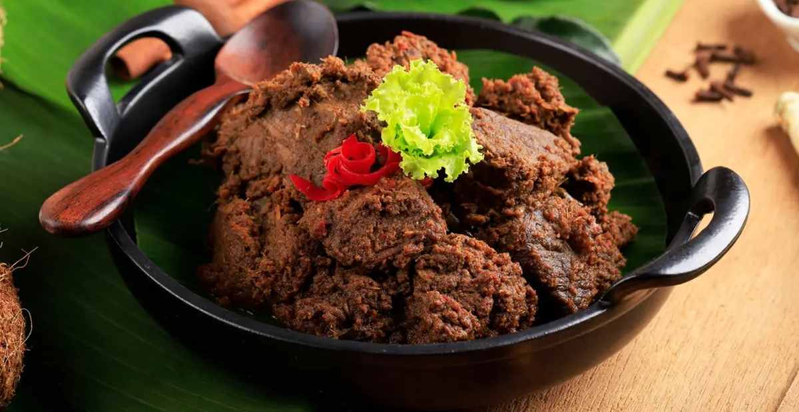
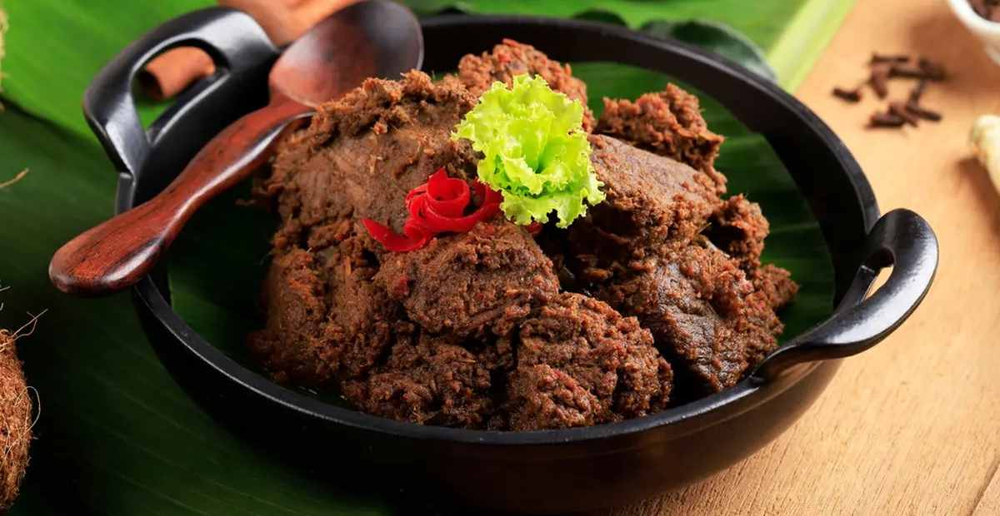

Lunch-Dinner Menu
The Ligar Chopsticks provides authentic traditional Indonesian cuisine in Kansas City Kansas
The Ligar Chopsticks provides bests dishes with Rendang Spciy Beef or Chicken, Maduranes Fried Duck, Lontong Balap and much more delicious meal.
Specialities
-
Rendang Spicy Beef/Chicken Curry/Rendang Sapi/Ayam $ 18
 


- Slow cooked beef/chicken in coconut milk,various spices,chilies, served with rice
-
Maduranese Fried Duck $ 18
- Fried duck served rice, sambal (chili sauce), vegetables, served with rice and deep fried Javanese crackers
-
Lontong Balap $ 18
- Bean sprout soup, fried tofu, lentho (black-eyed pea fritter), served with rice cake
- Tempeh-Soybean, Tofu, and Green Chilies/Sayur Tahu Tempe Cabe Ijo $ 15
- Slow cooked tofu, tempeh/soybean, green chilies in coconut milk, various spices, served with rice
Snacks & Drinks
- Banana Fritter/Pisang Goreng 5 pcs $ 7
- Chicken Belly Cake/Kue Perut Ayam 5 pcs $ 7
- Sweet Sticky Rice/Kue Lupis $ 7
- Bowsprit Cake/Kue Cucur 5 pcs $ 7
- Tropical Fruits Ice/Es Teller $ 7
- Coconut Ice/Es Kelapa Muda $ 7